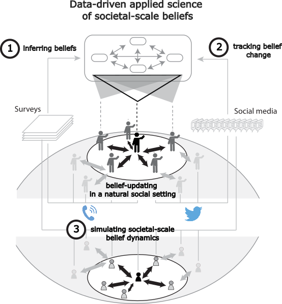

|
|
|
Research Scientist Applied Machine Learning Research Team at Mila, Québec AI Institute Founding Member of AI Institute for Information Integrity Member of Centre for the Study of Democratic Citizenship inference and decision-making in and on human and machine societies. Applications to socio-{political, economic, technical, environmental} dilemmas PhD, Physics (IMPRS Physics of biological and complex systems), University of Göttingen MSc, Physics, University of Toronto BSc, Physics & Mathematics, University of Toronto |
cebeuq [tod] alim [ta] mtamleup |
| Oct 2025 | Participated in the IVADO Agents WorkshopFocussing on the Current State of AI agents as part of IVADO's Thematic Semester on Autonomous AI agents. |
| Oct 2025 | Very happy to deliver our FWorkshop on Social Simulation with LLMs. |
| Aug 2025 | Participated in the week-long bootcamp Focussing on the Current State of AI agents as part of IVADO's Thematic Semester on Autonomous AI agents. |
| Aug 2025 | Presented by social simulation work and Veracity app demo papers accepted to main IJCAI conference. |
| July 2025 | Zachary presented our social simulation work at the NLP for Positive Impact workshop at ACL 2025 in Vienna. |
| July 2025 | Submitted TRUTH-RAG work to SOLAR workshop at COLM 2025. |
| June 2025 | The group welcomes Sneheel Sarangi as an incoming CS Master's student at McGill in the Fall. Sneheel will continue to work on the social simulation project. Exciting! |
| May 2025 | COLM workshop of LLM-based social simulations accepted! See you in October! |
| May 2025 | Presented Social Simulation project to the Multi-agent Seminar at Deepmind |
| Apr 2025 | Submitted persona work to NeurIPS dataset track! |
| Apr 2025 | Social Simulation project has been awarded an FLI grant! |
| Mar 2025 | Social Simulation project has been awarded an IVADO exploratory grant! |
| Feb 2025 | Happy to present social simulation work at the Centre for the Study of Democratic Citizenship's seminar series. CRIM. |
| Jan 2025 | Happy to share my thoughts on misinformation as a panelist at the Information Integrity Lab's Climate Mis/Disinformation Workshop hosted at CRIM. |
| Dec 2024 | We present Social Simulation work at 3 NeurIPS workshops (Socially Responsible Language Modelling Research (poster), Safe Generative AI (poster), and Towards Safe & Trustworthy Agents (Oral)). Congrats to the team! |
| Nov 2024 | We got a Foresight Institute grant to study AI collusion. |
| Oct 2024 | Happy to be affiliated with the Complex Data Lab. |
| Sept 2024 | Happy to join the Centre for the Study of Democratic Citizenship as a research member. |
| Sept 2024 | Very happy on this first of a series: "A Simulation System Towards Solving Societal-Scale Manipulation" accepted at the NeurIPS Workshops: Socially Responsible Language Modelling Research, Safe Generative AI, and Towards Safe & Trustworthy Agents (Selected fro an Oral presentation!!) Here is the preprint. |
| Aug 2024 | "Regional and Temporal Patterns of Partisan Polarization during the COVID-19 Pandemic in the United States and Canada" submitted! Here is the preprint. |
| July 2024 | ClimateMatch running again this year. Continuing as Day Lead for the socioeconomic curriculum, we've revamped the curriculum for the day. We leaned a fair bit on the Enroads simulator. Try it out. |
| May 2024 | Workshop paper on |
| Apr 2024 | Carbon tax topic modelling work published in |
| Nov 2023 | Gave a talk on using topic models on survey responses to infer ideology underpinning carbon tax opposition. This was at the CCAI workshop AAAI on |
| Aug/Sept 2023 | Gave a 2-part talk on Transition Narratives and complex coordination problems at the ClimateMatchAcademy Monthly Seminar. (Part 1; Part 2). |
| July 2023 | Climate Match Academy is alive and running! Delivered a day of socioeconomic curriculum and organized our Discord server of 100s of students from over 100 countries! Check out our always-accessible-from-anywhere Jupyter Book. | June 2023 | Presented game theory of social norms work to Joel Leibo's group at Deepmind. |
| Dec 2022 | Presenting topic modelling at NeurIPS Workshop Tackling Climate Change with Machine Learning. |
| Nov 2022 | Giving a talk (open to the public) at University of Washington's data science seminar (recording). |
| Oct 2022 | Attended the IBM/DIMACS Workshop on Bridging Game Theory and Machine Learning for Multi-party Decision Making at Rutgers. |
| Sept 2022 | Giving a talk at the Montreal Computational & Quantitative Linguistics Lab . |
| Sept 2022 | Presenting carbon tax work for the first time at the Montreal AI Symposium! |
| Sept 2022 | Meriem's NoisET paper got accepted in Physical Chemistry A! |
| Sept 2022 | Our mixing times paper was accepted to NeurIPS! |
| June 2022 | RLDM2022 was great! Presented urgency work and ran our workshop on social alignment in human and machines. Workshop recording available on workshop website. |
| May 2022 | Urgency work published in PLoS Computational Biology. |
| Apr. 2022 | Presented our agent abstraction paper at ICLR workshop: From cells to societies: learning across scales. |
| Mar. 2022 | Gave a couple guest lectures in graduate-level math course on dynamical systems at UdeM. So nice to have the time in a talk to spell things out and discuss with students! |
| Feb. 2022 | Lyapunov spectra for RNNs paper accepted to Frontiers in Applied Mathematics & Statistics |
| Jan. 2022 | 2 accepted submissions to COSYNE: the neurodata validation of our decision-making model; and new work on noise robustness in recurrent neural nets with Colin Bredenberg. |
| Jan. 2022 | Gave a talk on computing with transients at the Banff workshop on Dynamical Principles of Biological and Artificial Neural Networks. |
| Dec. 2021 | Presented polynomial mixing times work at EcoRL workshop at NeurIPS. See the preprint. |
| Nov. 2021 | Participated in Montreal's MAIN neuroAI conference. |
| Oct. 2021 | Presented poster at Montreal's AI Symposium. |
| Sept. 2021 | post on Mila blog post on our NeuroAI reading group. |
| Aug. 2021 | Urgency work out as a preprint! Twitter summary thread here. |
| May 2021 | Gave a talk on Stochastic Thermodynamics of learning to the Physics of Machine learning reading group at Mila. |
| Jan. 2021 | Urgency work peer-reviewed and accepted at COSYNE. |
| Feb. 2021 | Join us for a exciting day of talks and a panel of top experts on the goals and challenges for robust scientific explanations in neural and artificial intelligence systems. |
| Dec. 2020 | Urgency work peer-reviewed and accepted at the Biological and Artificial Reinforcement Learning workshop at NeurIPS. |
| Dec. 2020 | Montreal Artificial Intelligence and Neuroscience 2020 conference. |
| Nov. 2020 | Presented urgency work at the inaugural NeuroAI conference, NAISYS, at Cold Spring Harbor Labs. |
| May 2020 | Happy to lead the breakout session on higher cognition at UNIQUE's inaugural NeuroAI symposium. |
| Apr. 2020 | Check out our preprint on Lyapunov spectra for RNN training. |
| Apr. 2020 | Our work on inferring population dynamics from intrinsically variable, vastly subsampled, and indirectly accessed genetic sequences is published in PLoS Computational Biology. |
| Mar. 2020 | We are presenting our decision-making work in collaboration with the Cisek Lab at COSYNE. |
| Dec. 2019 | We are organizing a NeuroAI workshop at NeurIPS2019. |
| Dec. 2019 | nnRNN paper presented in main track of NeurIPS. |
| Nov. 2019 | With yet another wonderful edition of the Montreal Artificial Intelligence and Neuroscience (MAIN) conference, Montreal is further establishing itself as the hotbed for incisive NeuroAI research. Honoured to have my new postdoc work recognized with two awards here. |
| May 2019 | We are organizing a Physics and AI Workshop in Montreal. |
| Jan 2019 | family_size+=1! |
Summary
I am a computational modeller, theory-builder & data scientist/machine learning researcher interested in
- how formed beliefs and incentives shape decision-making at the individual level and
- how public opinion and social norms impact social dilemmas and alignment problems.
Towards these ends, I coordinate interdisciplinary collaborations with domain experts in which I also contribute technical mathematical and computational expertise (theory and models/algorithms for decision-making agent learning, statistical inference, data analysis, ...).

My current research pursues three synergistic lines of research (example publication from each line):
- Inferring Beliefs: Ideology from topic mixture statistics: Inference method and example application to carbon tax public opinion
- Tracking Changes in Beliefs: Regional and Temporal Patterns of Partisan Polarization during the COVID-19 Pandemic in the United States and Canada
- Simulating societal-scale belief dynamics: A Simulation System Towards Solving Societal-Scale Manipulation, SandboxSocial: A Sandbox for Social Media Using Multimodal AI Agents